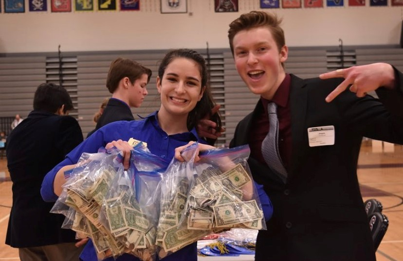
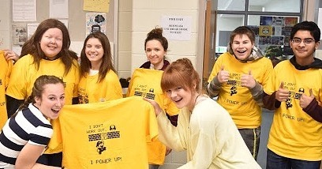
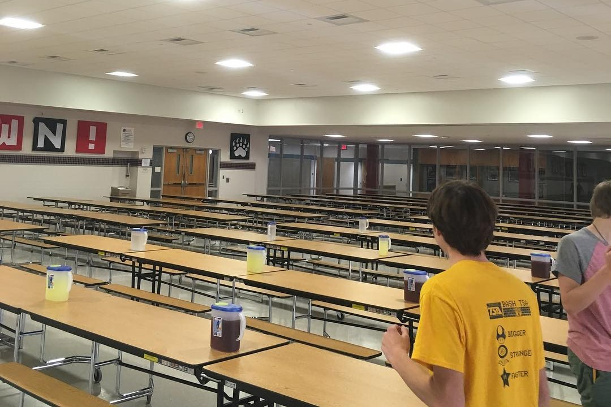
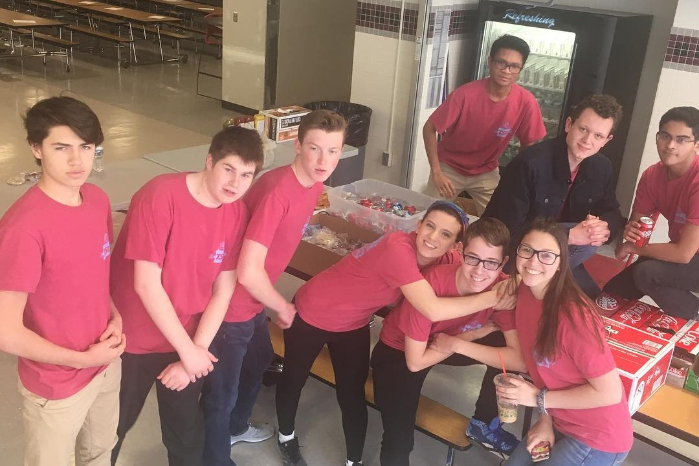

 The TSA Inspiration Award is a reward presented to TSA chapters that show outstanding community service and create positive relationships with their communities. The award celebrates TSA chapters that have an impact that goes beyond their typical technology projects.
While many clubs and organizations fundraise simply to raise money for that said group to use, the TSA chapter of Boyertown Area Senior High almost always donate a portion of their procedes to the ACS, or American Cancer Society. These types of considerate actions, along with many other charitable activities is what has led our chapter to obtain this award twice at the Regional level, and once during the Pennsylvania TSA State Conference of 2017.
 One of the fundraisers we hold is a T-shirt sale. Each year, our chapter chooses a different cancer to donate the funds to. Then, T-shirts are designed that fit whatever cancer matches that year. After the sale is complete, our school has a designated day for students and staff to wear the shirts that they purchased.
At the annual Homecoming Carnival held at Boyertown High School, our TSA chapter runs a concession stand and game booth. While simultaneously raising money for the chapter, we provide food and games to community members who attend the carnival.
 Our TSA chapter holds an annual Spaghetti Dinner, where chapter members prepare and serve spaghetti to community members. Chapter members hold this yearly fundraiser to serve the community and at the same time raise money to help pay for the TSA State Competition.
Chapter members recently volunteered at Boyertown’s local Tech Fest to help expose students, staff, and community members to Vex Robotics and engineering concepts. During the event, TSA members helped the community by educating people about advanced topics and creating a more educated environment.

Our TSA chapter runs an annual clothing drive that provides clothing to many families in need. Chapter members help to advertise the event to the students and staff at Boyertown High School and the two Boyertown middle schools, who are encouraged to bring in clothes to donate to a good cause.
At the annual Homecoming Carnival held at Boyertown High School, our TSA chapter runs a concession stand and game booth. While simultaneously raising money for the chapter, we provide food and games to community members who attend the carnival.
TSA chapter members helped to organize a 5K race to raise money for the chapter. Members helped to organize and carry out the 5K race, which included designing a course, gathering food, creating prizes and awards, advertising, finding sponsors, and securing a timing system through a race timing company. As a chapter, we raised over $10,000 dollars from the single day event.